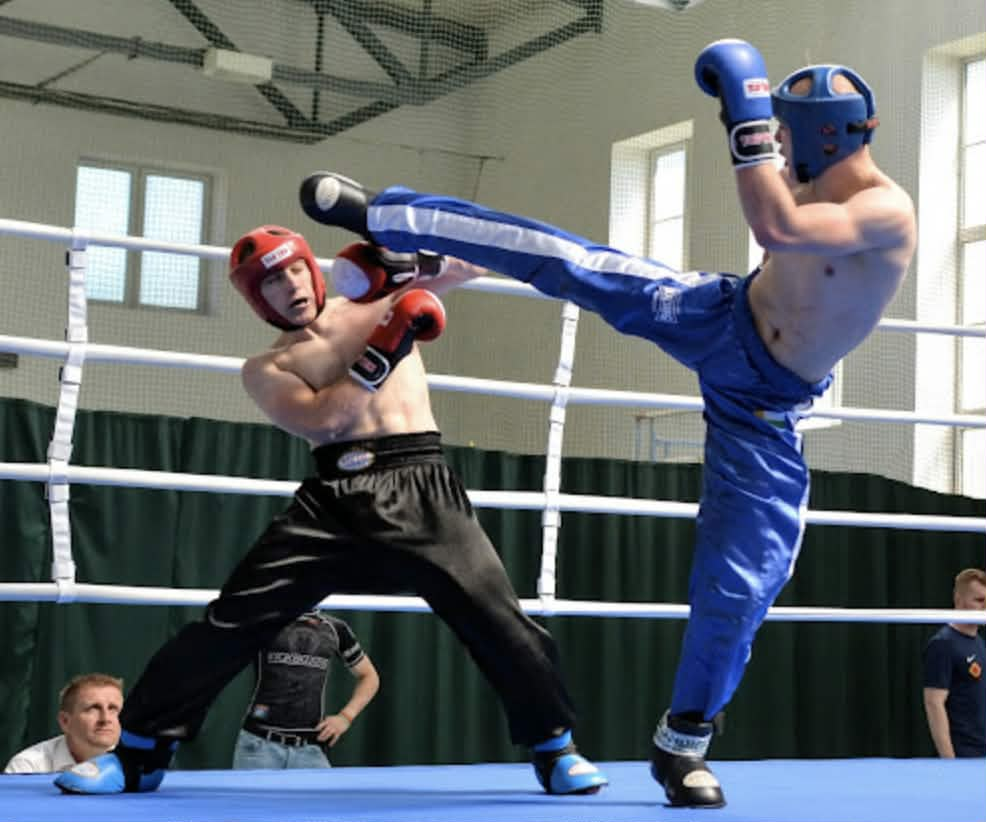

INSTRUKTOR KICKBOXINGU
Polskie Stowarzyszenie Bezpieczeństwa Osobistego (PSBO)
Kickboxing to jedna z najbardziej dynamicznych i wszechstronnych dyscyplin uderzanych, łącząca techniki bokserskie z rozbudowanym arsenałem kopnięć.
Współczesny kickboxing rozwijał się od lat 60. i 70. XX wieku, a z czasem wykształcił wiele formuł rywalizacji – od Pointfightingu i Light Contact, przez Full Contact i Low Kick, aż po K-1. Polska również ma w tej dyscyplinie piękne tradycje, a jedną z jej największych legend pozostaje wielokrotny mistrz świata Marek Piotrowski.
Dlaczego warto zostać instruktorem? Uprawnienia instruktorskie pozwalają wykorzystać własne doświadczenie do prowadzenia zajęć, rozwijania własnej sekcji, szkolenia zawodników oraz budowania dalszej kariery w sportach walki.
W ramach struktur PSBO otwieramy przed instruktorami i zawodnikami kolejne możliwości: zawody krajowe i międzynarodowe, możliwość ubiegania się o powołanie do reprezentacji Polski w organizacjach, z którymi współpracujemy, szkolenia, seminaria, licencje, egzaminy, zagraniczne campy – również w Tajlandii – oraz możliwość rywalizacji o pasy mistrzowskie na poziomie regionalnym, krajowym, europejskim, międzynarodowym i interkontynentalnym.
| Wymiar | Cena standardowa | Kluby partnerskie PSBO |
|---|---|---|
| 34 godziny | 1000 zł | 450 zł |